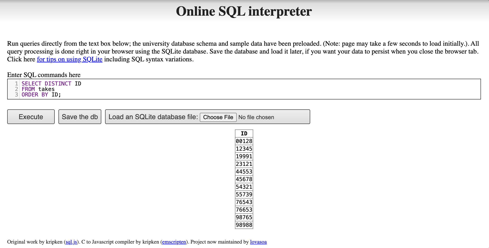
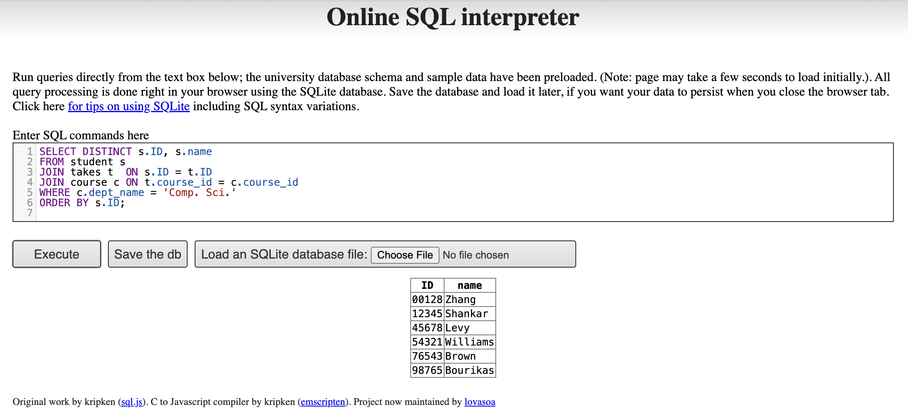
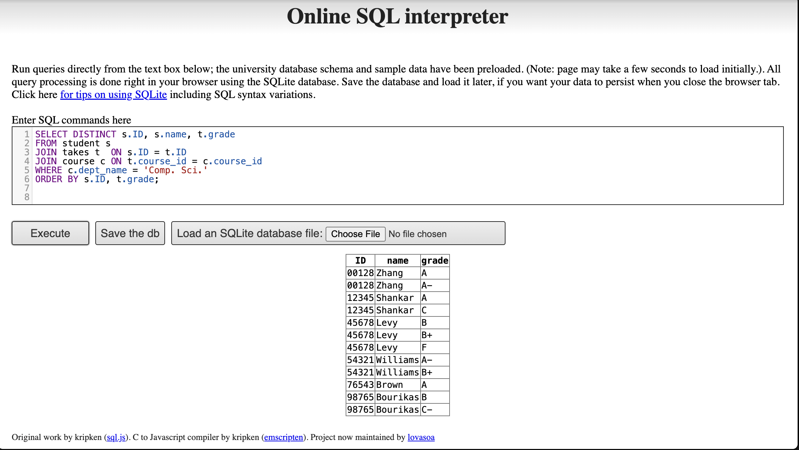
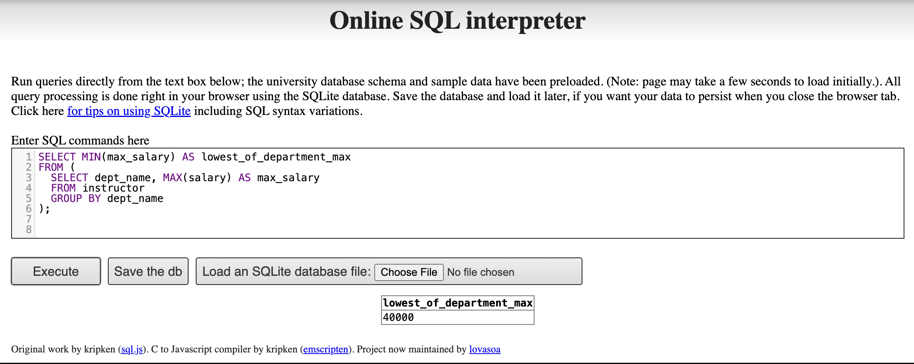
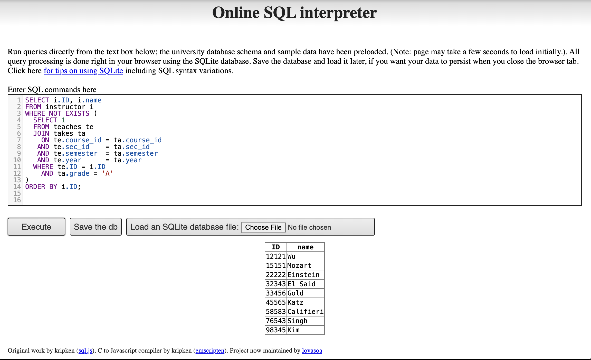

Assignment 3
1 1. Online SQL Interpreter
Online SQL interpreter link:
https://www.db-book.com/university-lab-dir/sqljs.html
2 2. Write SQL codes to get a list of
2.1 2(i) Student IDs (hint: from the takes relation)
SELECT DISTINCT ID
FROM takes
ORDER BY ID;
2.2 2(ii) Instructors
SELECT ID, name
FROM instructor
ORDER BY name;
2.3 2(iii) Departments
SELECT dept_name
FROM department
ORDER BY dept_name;
3 3. Write in SQL codes to do following queries
3.1 3(i) Find the ID and name of each student who has taken at least one Comp. Sci. course (no duplicates)
SELECT DISTINCT s.ID, s.name
FROM student s JOIN takes t ON s.ID = t.ID
JOIN course c ON t.course_id = c.course_id
WHERE c.dept_name = 'Comp. Sci.'
ORDER BY s.ID;
3.2 3(ii) Add grades to the list
SELECT DISTINCT s.ID, s.name, t.grade
FROM student s
JOIN takes t ON s.ID = t.ID
JOIN course c ON t.course_id = c.course_id
WHERE c.dept_name = 'Comp. Sci.'
ORDER BY s.ID, t.grade;
3.3 3(iii) Find the ID and name of each student who has not taken any course offered before 2017
SELECT s.ID, s.name
FROM student s
WHERE NOT EXISTS ( SELECT 1 FROM takes t
WHERE t.ID = s.ID AND t.year \< 2017 )
ORDER BY s.ID;
3.4 3(iv) For each department, find the maximum salary of instructors in that department
SELECT dept_name, MAX(salary) AS max_salary
FROM instructor
GROUP BY dept_name
ORDER BY dept_name;
3.5 3(v) Find the lowest, across all departments, of the per-department maximum salary
SELECT MIN(max_salary) AS lowest_of_department_max
FROM (
SELECT dept_name, MAX(salary) AS max_salary
FROM instructor
GROUP BY dept_name
);
3.6 3(vi) Add names to the list (department(s) whose maximum salary is the lowest)
SELECT dept_name, MAX(salary) AS max_salary
FROM instructor
GROUP BY dept_name
HAVING MAX(salary) = (
SELECT MIN(max_salary)
FROM (
SELECT dept_name, MAX(salary) AS max_salary
FROM instructor
GROUP BY dept_name
)
)
ORDER BY dept_name;
3.7 4. Find instructor (with name and ID) who has never given an A grade in any course he or she has taught
SELECT i.ID, i.name
FROM instructor i WHERE NOT EXISTS ( SELECT 1 FROM teaches te JOIN takes ta ON te.course_id = ta.course_id AND te.sec_id = ta.sec_id AND te.semester = ta.semester AND te.year = ta.year WHERE te.ID = i.ID AND ta.grade = 'A' ) ORDER BY i.ID;